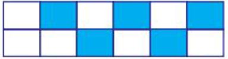

Untuk dapat memahami dan mengerti apa yang disebut Bilangan Pecahan. Coba baca penjelasan berikut.
Didi mempunyai 15 buah Kasturi yang akan dibagikan kepada 4 orang adiknya yaitu ina, ani, doni, dan dino. Ina memperoleh 5 buah Kasturi, ani memperoleh 4 buah Kasturi, dan doni memperoleh 3 buah Kasturi, sedangkan dino mendapatkan sisanya. Dalam hal ini, ina memperoleh \[\frac{5}{15}{}\] bagian , ani memperoleh \[\frac{4}{15}{}\] bagian, dan doni memperoleh \[\frac{3}{15}{}\] bagian. Menurut kamu berapa bagiankah Kasturi yang diperoleh dino? Pasti jawaban mu \[\frac{3}{15}{}\] bagian, karena sisa Kasturi didi adalah 3 buah.
Bilangan-bilangan \[\frac{3}{15}{}\],\[\frac{4}{15}{}\]dan \[\frac{5}{15}{}\] yang merupakan banyak masing-masing bagian buah Kasturi dibandingkan dengan jumlah keseluruhan buah kasturi disebut Bilangan Pecahan. Bilangan Pecahan terdiri atas penyebut dan pembilang. Pada Pecahan diatas, 3, 4, dan 5 merupakan pembilang. Sedangkan 15 merupakan penyebut.
| Gambar | Pecahan |
|---|---|
| \[\frac{1}{4}\] | |
|  | |
Pecahan senilai adalah Pecahan yang bernilai sama. Apa syarat dua Pecahan dikatakan senilai
Perhatikan cara memperoleh Pecahan-pecahan senilai berikut:
\[\frac{1}{2} = \frac{2}{4}\leftrightarrow 1 \times 4 = 2 \times 2 \leftrightarrow 4 = 4\]
\[\frac{1}{3} = \frac{2}{6}\leftrightarrow 1 \times 6 = 3 \times 2 \leftrightarrow 6 = 6\]
\[\frac{4}{8} = \frac{2}{4}\leftrightarrow 4 \times 4 = 8 \times 2 \leftrightarrow 16 = 16\]
| no | jenis pecahan | contoh | keterangan |
|---|---|---|---|
| 1 | Pecahan biasa terdiri atas Pecahan murni dan tidak tidak murni |
Pecahan murni: \[\frac{1}{2},\frac{1}{3}\,\frac{2}{3}\] Pecahan tidak murni: \[\frac{3}{2},\frac{5}{2}\,\frac{6}{3}\] |
Pada Pecahan murni nilai pembilang < nilai penyebut. Pada Pecahan tidak murni nilai pembilang > nilai penyebut. |
| 2 | Pecahan campuran | \[1\tfrac{1}{4},2\tfrac{1}{3},3\tfrac{2}{5}\] | \[1\tfrac{1}{4}\rightarrow\] bagian bulat = 1 dan Pecahan murni = \[\tfrac{1}{4}\] |
| 3 | desimal | 0,1; 1,23; 0,421 | 0,1 dibaca nol koma satu 1,23 dibaca satu koma dua tiga |
| 4 | Persen(perseratus) Dilambangkan dengan % | 10%=\[\frac{10}{100}\] 15%=\[\frac{15}{100}\] |
10% dibaca sepuluh persen 15% dibaca lima belas persen |
| pecahan biasa | pecahan campuran | desimal | persen |
|---|---|---|---|
| \[\frac{9}{2}\] | \[\frac{9}{2} = \frac{8+1}{2}\] \[= \frac{8}{2} + \frac{1}{2}\] \[= 4\tfrac{1}{2}\] |
9:2=4,5 | \[\frac{9}{2} \times 100\]% =\[\frac{900}{2}\] \[= 450\]% |
| \[\frac{24}{13}\] | \[\frac{24}{13} = \frac{13+11}{13}\] \[ = \frac{13}{13} + \frac{11}{13}\] \[= 1\tfrac{11}{13}\] |
24 : 13 = 1,84 | \[\frac{24}{13} \times 100\]% =\[\frac{2400}{13}\] \[= 184,6\]% |
| pecahan | cara penyelesaian |
|---|---|
| \[2\tfrac{3}{4}\] | \[2\tfrac{3}{4}=\frac{2\times 4+3}{4}=\frac{11}{4}\] |
| \[3\tfrac{2}{5}\] | \[3\tfrac{2}{5}=\frac{3\times 5+2}{5}=\frac{17}{5}\] |